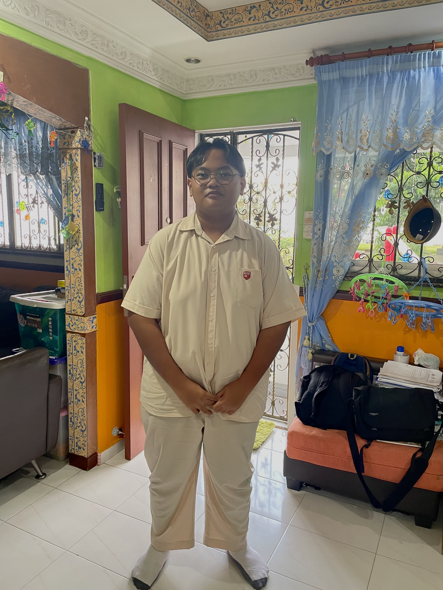
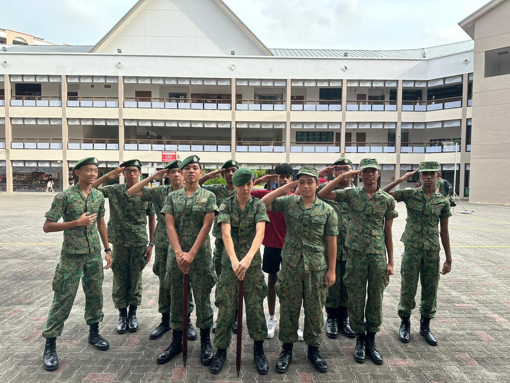
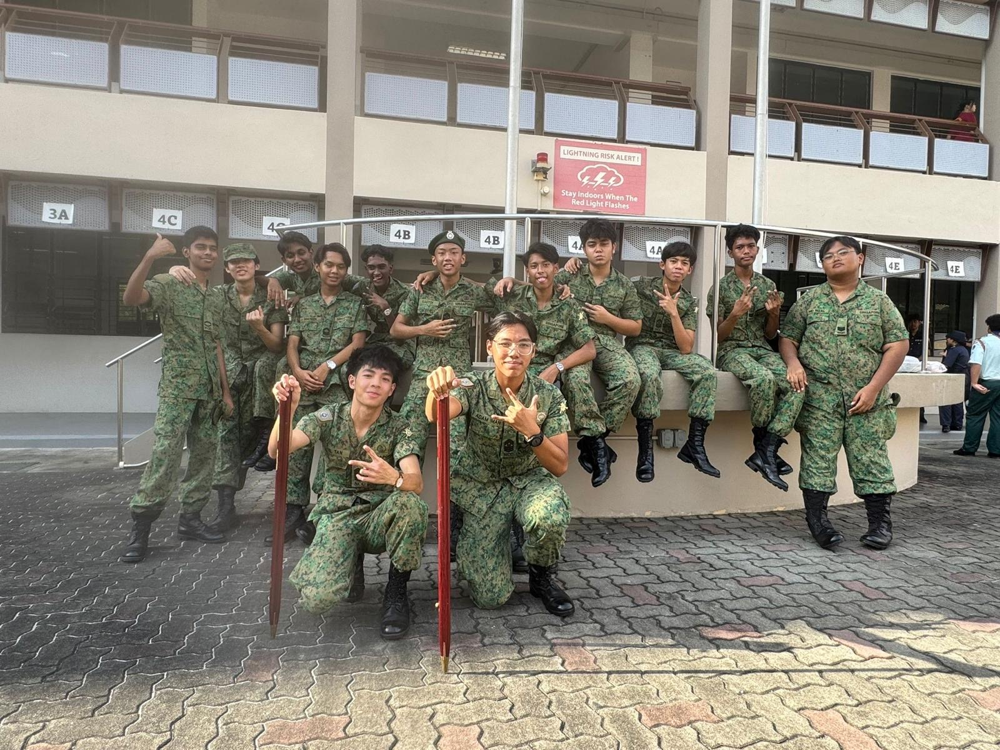
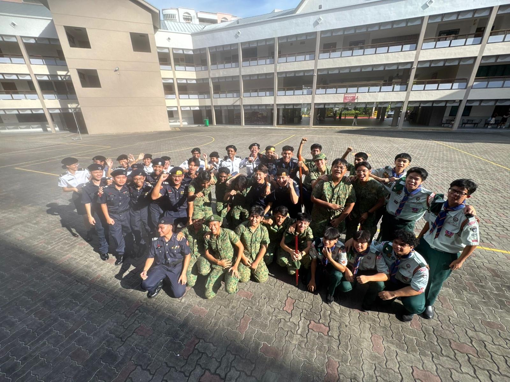
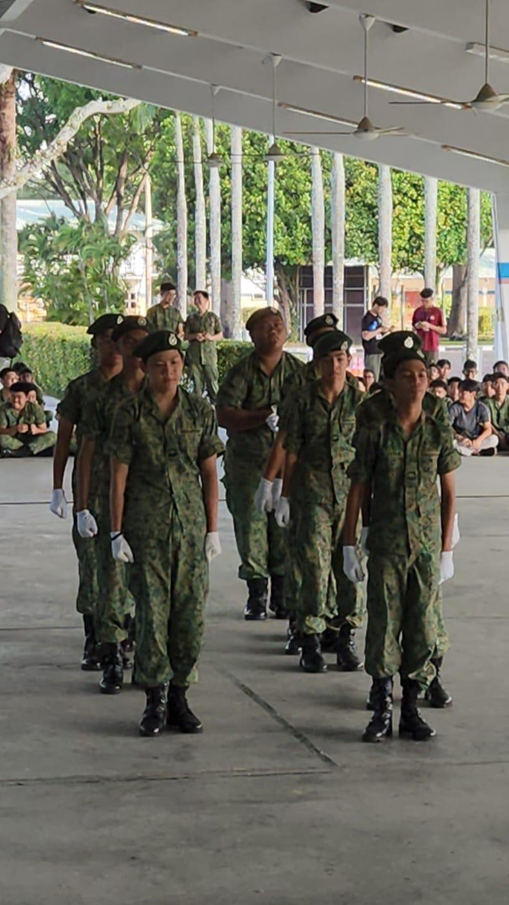
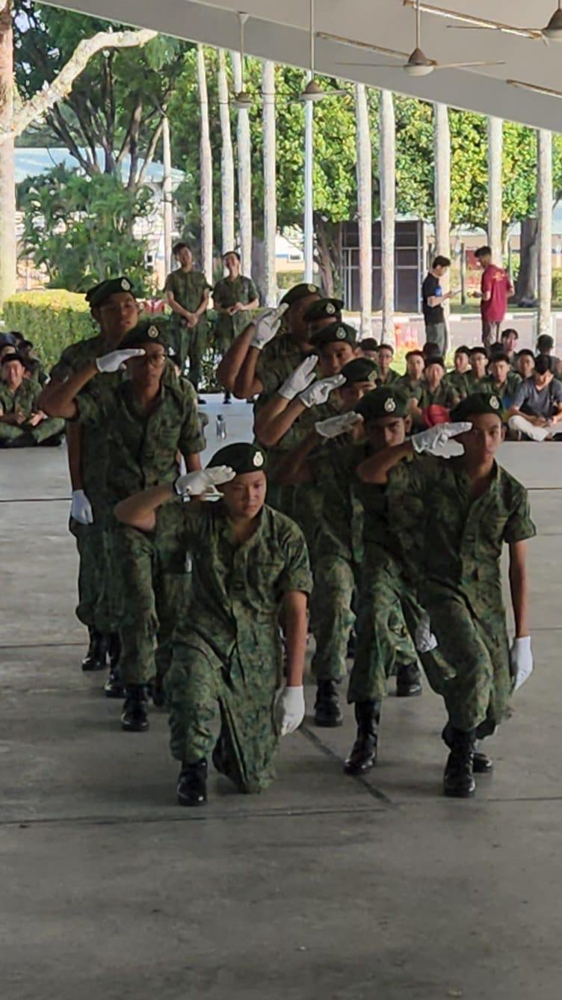
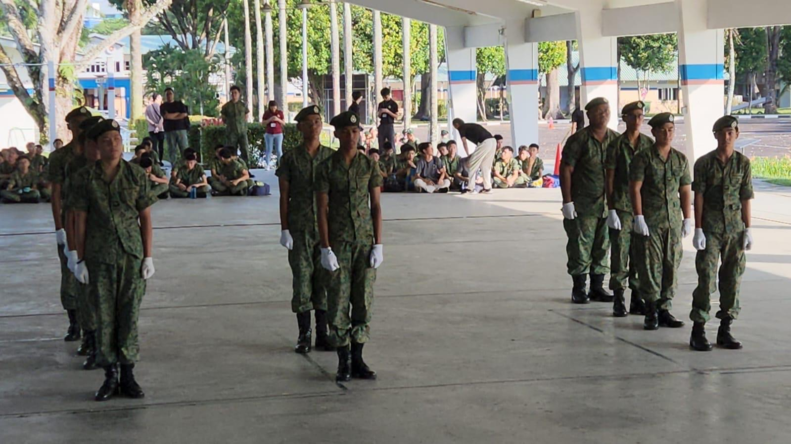

Welcome to my Portfolio!
“Be yourself; everyone else is already taken.” – Oscar Wilde
Hi, I am Rizal from East Spring Secondary School.This quote reflects how I approach life. I believe that everyone has unique strengths and talents, and I prefer to learn and grow in my own way rather than imitate others.
When preparing for exams, I use study methods that suit my learning style instead of simply following what everyone else is doing.
For example, I create concise summary notes and practice questions to reinforce my understanding, as these methods help me learn more effectively.
I am diligent and persistent in my studies, and I do not give up easily when faced with challenges. At the same time, I value social connections, as they help me maintain balance and stay motivated. I believe that success comes not from being like everyone else, but from developing my own strengths while continuing to learn and improve.

Interests & Strengths
Interests
- Gaming
- Technology
- Cybersecurity
- Sports
- Coding
- Psychology
Strengths
- Diligent
- Resilient
- Socially aware
- Open-minded
- Teamwork
- Adventurous
Aspiration
I aspire to become an Ethical Hacker or SOC analyst . I have always found these jobs interesting due to the fast-paced coding
which looked very complicated. I love the thrill of problem solving and would love to do coding on my own. I would love to join Cybersecurity
as it defends our digital worlds using complex coding which strengthens over time. I have also seen my own Elder Brother do fast-paced coding on
laptop which intrigued me even further as it looked very "cool". I witness his codes failed many times but yet he did not give up. Through this moment,
I knew that this course is interesting to me.
I am now learning HTML,CSS and some JavaScript for this Portfolio Website using "W3schools". I also started learning basic python and early cybersecurity lessons
through "tryhackme" which enforced my decision for cyber sector even more. I think the challenge of having to always adapt to new Scripts or Hackers relentless attack
might be a huge challenge. This is because everyday we would have to always improve to be even stronger than the Hackers. They could even try to infiltrate at night when
we are sleeping hence this might be the biggest obstacle I will face in this industry. I will overcome by having daily practices like using "hack in the box",joining hackathons or
or Capture the Flag competitions. These practices makes sure I am always prepared for the worst case scenario but ofcourse I will do it in a team because I think that having friends
joining in the coding would be more productive for me.
PASSION
My passion started during my Childhood years. I used to watch movies with hackers in them, by looking at their codes that they do. I was so interested to the point that I searched how to hack at that time but nothing popped out. Throughout the years, I keep hearing the word firewall which intrigued me,"How does a firewall work?" I have always wanted to clarify this question that I have because in my imagination I just think that it is a wall with very complex coding which makes it strong against hackers. In this society and age, technology is everywhere. No matter where you look theres always technology. It became a neccessity to have in our daily life which made me strive to really defend innocent people from the dark truth of this world. I imagine a world full of warm, vibrant, smiles however that dream is merely a dream. Now, I started learning about the cybersecurity industry to possibly join a ethical hacking group. I love to problem solve which is why I love looking at the result of my codes.
CCA: NCC (Land)
Memorable experience:
Enjoyable experience:
- “Tekan” my peers, I love observing at their reactions but at the same time I show consideration to them.My seniors also tekan me very hard last time so I looked forward to this.I enjoyed the camping trip because it allowed me to bond with my friends and learn new skills. We had to set up our own tents, cook our own meals, and navigate through the wilderness. It was a challenging experience, but it was also incredibly rewarding. I learned how to work as a team and how to overcome obstacles together.
- Urban OPs, this is a training to test how you clear rooms.Seniors are acting terrorists while Juniors are trained to clear rooms efficiently. This was the highlight of the CCA
Proudful moments:
- During Freestyle Drill Competitions, we did not win.However, I was proud to give my best shot and to not be afraid of the results. I believe that the “Journey” is more valuable than the results.
- When I was a appointed as a De facto leader for the Sec 1s, stood to me because it shows that all my efforts were not in vain and I at least got a result that I wanted.
CCA Reflection
NCC taught me a lot of values. For example, Discipline the core value of Army itself and teamwork. I also learnt navigation skills, field signals and many more. NCC also taught me to be organised and time waits for no man but most importantly brotherhood through rigorous training experiences with my mates. I learnt that I am a very dedicated person even though I am a very dedicated person.I was immature in the past but growing into this cca made me more mature in my decisions and the consequences that will happen. I value my friends,juniors and the experience entirely, it was truly enjoyable that I regret complaining about it.





Values
I strongly believe in being yourself because everyone is made unique.Everyone has their own preferences, this is the reason life is interesting.We should love ourselves no matter who we are. I feel like being socially aware is important towards me, I want everyone to be happy but I know that reality does not allow that.I love doing group projects.The discussions while bonding with each other, its a core memory. Throughout my time in school, I learnt lots of sports like volleyball and frisbee during PE which taught me resilience and perseverance.I also started maintaining my weight which requires a significant amount of discipline and self-control. My school also taught me the importance of teamwork and being independent through classes like CCE. I also learnt to be open-minded and accepting of others' opinions and perspectives, which has helped me to develop better relationships with my peers and teachers.
Work Experience
During November Holidays 2025, I had the opportunity to attend a work experience set by my school. At first I joined the IT department, but the days clashed with My O level Malay papers so I was reassigned to become a Social Worker . Although I was bummed out about it, I still enjoyed my time at the Ageing centre in Kaki Bukit. It was my first time interacting with the elderly and I felt clueless about the work.In those two days my patience grew, the elderly felt like children, learning new skills and it was so hard to convey a message to them. I also observed that many elderly were targeted by phishing emails or links which was a scam. I had to advise and teach them digital literacy so they can be prepared for the evolving world. Although it was a short experience, I learnt a lot about the elderly and how to communicate with them. I also learnt that patience is key when dealing with the elderly, as they may have difficulty understanding new concepts or technologies. I also realised that hackers or scammers prey upon the elderly because they are not used to technology. Overall, this work experience was a valuable learning opportunity that helped me develop important 21st Century skills and gain a better understanding of the challenges faced by the elderly in our society.
Reflection
Through this work experience, I improved my communication skills and became aware of the clever cyber threats targeting the elderly. I also made friends with classmates whom I had never spoken to before. The elderly shared their experiences with me, allowing me to learn from their mistakes. This experience changed my perspective and made me more aware of society and the people around me. I also learnt that patience is key when interacting with the elderly, as they may need more time to understand new concepts and technologies.


Relevant projects
- This website was coded by me using HTML,CSS and Javascript. I learnt how to code through Youtube platform and a website "w3schools".It was very hard to understand at first but I persevered and learnt to write and soon it worked. The feeling of thrill and excitement was indescribable when I saw my code working.
- I did a case study Research on Riot games Vanguard how they prevent cheaters in their game. While ensuring the privacy of the players were not leaked through malicious hackers. Through this research, I learnt Kernel-mode anti-cheat system It was very interesting to see that Riot games actually have control over the entire computer device. I did not know that "Vanguard" was actually invasive and can access our private data. I also learnt the great measures Riot games took to ensure their Vanguard is stronger than the cheaters or hackers out there.
- I am also learning basic cybersecurity fundamentals through "Tryhackme".

Leadership
Class Chairperson (Sec 2)- I helped to organise class events like birthday celebrations and attendance taking: taught me the importance of communication and leadership skills through motivating classmates and coordinating with teachers.
NCC (Land) S4 (Sec 3): trained me in responsibility and time management as I had to be one of the earliest and latest every day.
Led a team of cadets (Sec 4): developed leadership and teamwork skills by helping motivate and guide my team towards shared goals.
Reflection
The leadership opportunities exposed me to different situations and challenges, it developed me through ways I never thought like it made more more outspoken even though I was shy and introverted. I learn that I am shy as a leader and I care too much about other people's opinion of me. I learn about other people's attitudes and personalities. Throughout this 4 years, I made many friends who are different, this made me to different personalities and learn how to communicate with them. Through my leadership experiences, I have learned that being a good leader requires more than just giving orders and delegating tasks. It requires empathy, communication, and the ability to inspire and motivate others. I have also learned that leadership is not just about achieving goals, but also about building relationships and fostering a positive team culture. Overall, my leadership experiences have helped me to develop valuable skills that will serve me well in the future, both in my personal and professional life.
Achievements
- Silver Award for Malay Writing Competition -2020 (Primary 4)
- Certificate of Appreciation for contribution as ICT leader - 2021 (Primary 5)
- Certificate of Participation for Singapore Youth Festive (SYF) -2022 (Primary 6)
- Edusave Award (EAGLES) - 2022 (Primary 6)
- Certificate of Completion for OBS - 2025 (Sec 3)
- Edusave Award (Eagles) - 2025 (Sec 3)
- Edusave Merit Bursary - 2025 (Sec 3)
- Edusave of Academic Achievement - 2025 (Sec3)
- Certificate for Outstanding Performance in DNT - O levels - 2025 (Sec3)